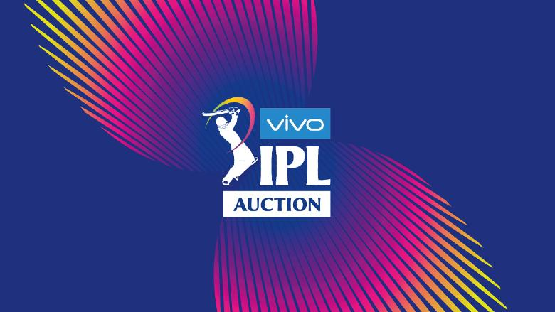

IPL Auction Live Updates
LIVE UpdatesIPL Auction 2019 Date, Time, Venue, Schedule, Players List, Rules: IPL Auction will be held on a single day as against the previous years of two days with new auctioneer and in a new city.
IPL 2019 Auction moves from its regular programming of being stretched over two days and start in the morning to a mid-day affair in a single day. The auction will allow all franchises to firm up their strategies to pick the players they think would be best suited for their side. A total of 346 cricketers have been listed with the salary cap being raised from Rs 80 to Rs 82 crores. With the removal of Richard Madley, a different auctioneer will be banging the gavel. That man is Hugh Edmeades but he will be overseeing an event that is far more low key compared to the marathon mega-auction of the previous season. The 346 cricketers in the auction will be split into three groups- batsman, bowler and all-rounder. Ahead of the auction, every team provided a list of players retained and released. While most of the teams release quite a few players, defending champions Chennai Super Kings have released only three players.
When is the IPL 2019 auction?
The Indian Premier League 2019 auction will take place on Tuesday, December 18, 2018.
Where is the IPL 2019 auction venue?
The Indian Premier League 2019 auction will be held in Jaipur, Rajasthan.
What time will IPL Season 12 auction takes place?
The Indian Premier League 2019 auction will start at 1430 hours IST.
Which channel will broadcast the IPL 2019 auction?
The IPL 2019 auction will broadcast on Star Sports Network. The coverage will be spread across Star Sports 1, Star Sports 1 HD, Star Sports 1 Hindi, Star Sports 1 HD Hindi, Star Sports First, Star Sports 1 Tamil, Star 1 Sports Telugu, Star Sports Select 1 and Star Sports Select 1 HD.
How do I watch online live streaming of the IPL 2019 auction?
IPL 2019 auction live streaming will be available on Hotstar. You can also catch the LIVE UPDATES of the auction on CricBlast.cf.
The eight Indian Premier League eight franchisees will be in Jaipur on Tuesday with a total ₹145.25 crore to buy up to a maximum of 75 players during the one-day auction process for the IPL Season 12.
will bring to its readers all the updates and action live from the auction hall. The action will also be broadcast live on Star Sports and the OTT platform Hotstar.
Total 346 players have been shortlisted for the Indian Premier League Season 12 auction at Jaipur on December 18 following a nod from the franchisees.
Yuvraj Singh, put back in the auction pool by Kings XI Punjab, still finds the team owners interest as he seeks yet another year in the cash-rich league. To stay in contention one of the T20 cricket’s biggest talents has slashed his base price by 50% to ₹ 1 crore. The cricket icon figures in the IPL auction short list along with Axar Patel and various other international stars.
The team to release Yuvraj and Axar Patel is going to be the top trader on December 18.